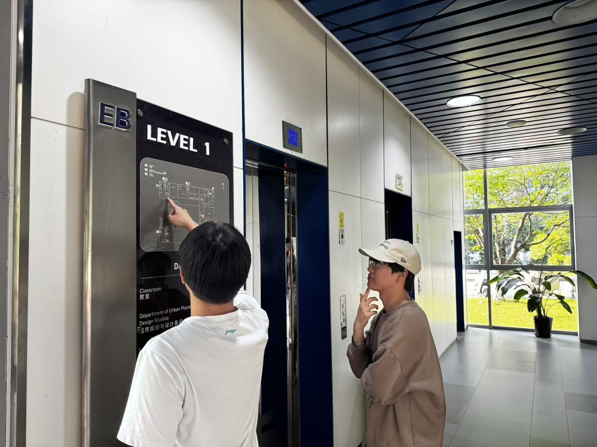
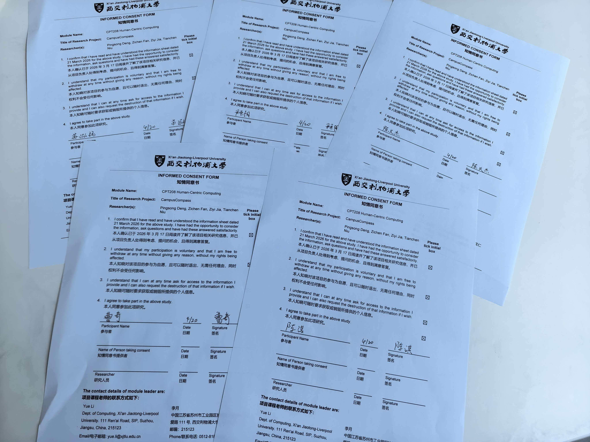

1. Motivation & Research
Motivation, gap findings, and stakeholder personas explain why EB wayfinding matters.
A browser-based EB building navigation kiosk that turns confusing room codes into entrance-aware routes for new students and visiting guests.
CampusCompass addresses a common EB building problem: room codes such as EB204 reveal the floor but not the wing, closest entrance, or turning decisions. Users choose their entrance, enter a target room, and receive map-based guidance with concise steps.
Motivation, gap findings, and stakeholder personas explain why EB wayfinding matters.
Journey map and 3 must-have requirements documented.
Alternative comparison, low-fi flow, and sketch evidence frame the design choices.
Architecture summary, prototype link, and contributions table show implementation.
Alpha results and reflection connect user feedback to design implications.
Open a section from the menu to view its full content in a dedicated reading layout.
"I know EB204 is on the second floor, but I still do not know which entrance or corridor gets me there fastest."
Representative pain point from first-time EB navigationOur group selected the Active track because indoor navigation is a real, frequent friction point in everyday campus movement. In EB, users may know the room code but still fail to locate the room efficiently because the code does not reveal wing-level direction. This creates repeated stopping, backtracking, and uncertainty, especially for first-year students in their first weeks and external guests who visit only once. We observed that this problem is not caused by a lack of motivation to navigate, but by a mismatch between static signage and the moment-to-moment decisions users need to make while moving. We therefore designed CampusCompass as a point-of-entry decision support tool: users declare where they entered, enter a destination code, and immediately receive a shortest path and plain-language steps. This directly supports quick, confident movement under time pressure and lowers cognitive load. The concept is intentionally lightweight, browser-based, and deployable on a kiosk screen, so it can be installed where confusion starts rather than requiring every user to install a new app. The project reflects human-centered priorities: reducing anxiety, improving first-time success, and enabling independent navigation for a broader range of users.
Primary users are new students and visiting guests. Secondary stakeholders include reception staff, teaching staff, and facilities teams who benefit from reduced direction requests and clearer movement flow.

XJTLU Student
Age: 20
Tech: High

External Visitor
Age: 42
Tech: Medium
Questionnaire findings were translated into concrete wayfinding requirements for CampusCompass.
We collected survey responses from 50 participants through a questionnaire. The sample included 20 first- and second-year students, 20 third- and fourth-year students, and 10 external visitors. This mix captured both routine classroom-finding problems and first-time navigation difficulties in unfamiliar campus buildings.
The questionnaire showed that classroom-finding problems were frequent, repeated, and tied to specific building conditions rather than isolated mistakes. We used comparison across response groups and a pain point-to-mechanism mapping matrix to identify which problems appeared most often and which wayfinding supports were most needed.
20 participants said unclear building numbering led them to the wrong classroom. The strongest matching mechanism is building-specific destination input with clearer room parsing. This suggests students need the system to reduce ambiguity before moving. This supports searchable destination input and route generation based on explicit building context.
12 participants reported difficulty because floor labels were not clear enough. The most relevant mechanism is floor-aware route guidance with explicit level transitions. This indicates students need confirmation of when to go upstairs, downstairs, or stay on the same level. Therefore, route output should include strong floor cues and step-by-step instructions.
32 participants identified discontinuous room numbering as a major source of confusion, making it the most common pain point. The strongest mechanism is guided route breakdown instead of expecting users to infer the layout themselves. This suggests students need direct instructions rather than spatial guesswork. As a result, the design should prioritize concise action-based guidance and a simple top-down route view.
24 participants said they lost orientation when moving between outside and inside spaces. The strongest mechanism is point-of-entry orientation through an immediately visible electronic sign. This is reinforced by 24 participants saying they would use the system at first sight in an unfamiliar place, while 21 said they would use it after spending too long searching. This supports placing the system at building entrances and designing it for instant use under time pressure.
The severity of the problem was also clear. Only 8 participants found a classroom within five minutes in their worst experience, 16 took 5 to 10 minutes, 17 spent more than 10 minutes, and 9 skipped class because they could not find the room. In addition, 38 participants had been late because of classroom-finding difficulties. These findings show that the system must reduce hesitation, save time, and restore confidence at key decision points.
A stacked bar chart helps transform questionnaire findings into concrete design requirements by mapping each pain point to the navigation mechanism most needed to address it. This makes the analysis meaningful not only descriptively, but also as a design translation tool that connects observed frustrations to specific interface features.
The strongest corresponding feature is structured destination search. This indicates that students need the system to interpret room targets more clearly than static signs do. This supports searchable room input, building-aware matching, and reduced ambiguity in destination selection.
The strongest corresponding feature is floor-specific route guidance. This reflects that students need explicit confirmation of vertical movement, not just a final room number. Therefore, the system should clearly communicate floor transitions as part of the route.
The strongest feature is step-by-step route instruction supported by a simplified visual path. This indicates that students need direct navigation help instead of relying on room-number patterns that seem inconsistent. As a result, the interface should lower cognitive load through short action-based instructions and a legible route display.
The strongest feature is entrance-based orientation. This suggests that students need support at the moment they enter the building, when uncertainty is highest. This supports a requirement for a point-of-entry electronic sign, a clear "you are here" starting point, and immediate route generation from the chosen entrance.
These mechanisms are not decorative additions. They are direct responses to observed user problems. At a system level, this means the final design must be quick to access, easy to understand, building-specific, and capable of guiding users from uncertainty to confident movement with minimal effort.
The system must provide immediate visual feedback after each user action, such as destination input or route generation. This helps students confirm that the interaction is working correctly and reduces hesitation during time-sensitive classroom search.
The system must present navigation as short, sequential steps supported by a simple route view. This allows students to follow the path with low mental load and reduces confusion caused by complex building layouts or discontinuous room numbering.
The system must clearly indicate when the user has reached the correct destination and how to restart a new search if needed. This gives students confidence that the task is complete and prevents lingering uncertainty at the end of the journey.
Five fieldwork and interview records are reserved here for final media evidence:

Interview record with a target user.

Discuss how to develop interactive features with potential users.

On-site survey of the EB building structure and classroom layout.

Participants signed consent forms before research and usability testing.

Usability testing experiment in progress.
Eight rapid UI sketch ideas were produced during ideation to explore entrance selection, input layout, and route feedback patterns.

| Alternative | Strengths | Limitations | Decision |
|---|---|---|---|
| 2D Top-Down Map + Text Steps | Fast scanning, low visual noise, easy to explain in kiosk context. | Less spatial realism than 3D view. | Chosen (better first-time task completion). |
| 3D Isometric Navigation View | Stronger realism and visual attractiveness. | Higher cognitive load and slower decision speed for some users. | Not selected for alpha version. |
| Text-Only Direction List | Implementation is simple and lightweight. | No visual orientation support; hard at complex intersections. | Kept only as supportive layer, not primary mode. |
Overall evaluation: This option offered the strongest balance of clarity, speed, and first-time usability for a public kiosk wayfinding context.
Compared to the 3D isometric view, it retained clearer route readability and introduced less cognitive load during fast decision-making. Compared to the text-only list, it offered more visual orientation support while remaining simpler and easier to interpret than a more spatially realistic interface. For these reasons, it was chosen as the most effective solution for helping students complete classroom-finding tasks quickly and confidently.
Clickable Figma draft: View prototype

Captures destination classroom, current entry point, and optional floor.

Interactive HTML/CSS/JS interface built for touch-kiosk resolution.

Lightweight shortest-path algorithm mapping the predefined EB hallway needs.

Stores route graph, room data, landmark nodes for real-time instruction updates.

Free-tier cloud hosting (GitHub Pages) allowing seamless remote updates.
Hosted system: CampusCompass Interactive Web App
| Member | Primary Contributions |
|---|---|
| Pingsong Deng | Frontend implementation, route UI integration, testing support. |
| Zichen Fan | Graph modelling and algorithm support, coding and debugging. |
| Ziyi Jia | UX flow design, content writing, process documentation. |
| Tianchen Niu | User research coordination, evaluation records, visual assets. |
This section explains how AI was used as an assistive tool throughout the CampusCompass project. It supported drafting, troubleshooting, and refinement, while all final design judgments, user research decisions, and evaluation conclusions remained human-led.
Each prompt combined project goals, kiosk usage context, and engineering constraints so AI suggestions stayed relevant to our classroom navigation scenario.
We reviewed every AI-generated suggestion before using it, checking whether it matched our UX goals, technical feasibility, and course requirements.
AI was used to help explain errors, suggest fixes, and improve small parts of the HTML, CSS, and JavaScript during implementation.
Useful AI suggestions were adapted into our actual route flow, interface structure, and deployment setup rather than copied directly without modification.
Final decisions were based on user needs, heuristic thinking, and team discussion, ensuring the system remained human-centred instead of AI-directed.
We documented prompts, useful outputs, and final human decisions for accountability.

Qualitative findings & observation highlights from 3 early users.


Following the alpha iteration, a large-scale evaluation confirmed significant improvements in wayfinding efficiency and subjective confidence. The data below highlights our system's impact on reducing cognitive load and time pressure.

High Psychological Impact: The system fostered extremely high Confidence (4.67), Ease of Use (4.33), and Stress Reduction (4.33), confirming it successfully minimizes anxiety and cognitive load in unfamiliar campus buildings.

Efficiency Gained: Users experienced a massive 45.2% mean reduction in route-finding time. The narrower box plot spread with the system also indicates much more consistent, predictable navigation.

Punctuality Boost: 80% of users reached their destination in <117s (compared to 215s without the system). This interaction shift effectively eliminates the stress of being late for classes.
To complement our quantitative results, we summarized the alpha test through three usability tasks, three participant-level observations, and representative anonymous feedback quotes. This makes the evaluation easier to read from both a task perspective and a participant perspective.
| Usability Task | Success Rate | Average Time | Main Error Point and Design Implication |
|---|---|---|---|
| Task 1: Enter the destination classroom and generate a route. | 3/3 completed; 2/3 without help. | 32s | The main friction point was slow classroom selection on the touchscreen when users already knew the room code. This led directly to the addition of a direct text input field for destination entry. |
| Task 2: Select the current entrance point and confirm the starting direction. | 3/3 completed; 3/3 without help. | 18s | No major failure occurred, but one participant briefly hesitated when distinguishing between similar entrance positions. This suggested clearer entrance labels and stronger highlighting of the selected starting point. |
| Task 3: Interpret the route and follow the map toward the correct classroom. | 3/3 completed; 2/3 without help. | 28s | Two users needed a short moment to map the top-down route onto the real corridor. This informed our refinement toward clearer landmarks, simpler route presentation, and lower visual decoding effort. |
| Participant | Tasks Tested | Success Rate | Key Issue Observed |
|---|---|---|---|
| Participant A: First-year student | Entered classroom code; selected entry point; followed the generated route to the target room. | Completed assigned flow without assistance. | Wanted a faster way to specify the target classroom and clearer confirmation after the route appeared on screen. |
| Participant B: First-time visitor | Selected an unfamiliar entrance; interpreted the top-down map; navigated corridor turns toward the destination. | Completed assigned flow; needed one clarification when matching the interface to the real hallway. | Understood the route overall, but wanted stronger visual landmarks and more explicit wording at decision points. |
| Participant C: Third-year student | Used direct room input; regenerated the route after changing the entry point; checked final destination confirmation. | Completed assigned flow with only brief orientation time. | Found the process efficient, but suggested clearer restart and completion feedback after reaching the classroom. |
These comments summarize representative reactions from the same three early users and reinforce the patterns observed in the task and participant summaries above.
"The route was much faster than trying to figure it out by myself. Once the classroom appeared on the map, I felt more certain about where to go next."
"I liked that the system gave me a clear path immediately, but at first I still needed a moment to match the route with the real corridor, so clearer visual guidance would help."
"Typing the classroom directly was very convenient. It reduced unnecessary searching and made the whole process feel more efficient when I was in a hurry."
Together, these responses show that CampusCompass improved speed, certainty, and perceived usability, while also clarifying that route interpretation should become even more immediate for first-time users.
Social & Ethical Implications: CampusCompass actively champions human-centric inclusivity by reducing navigational stress for new students, external visitors, and those with spatial cognitive challenges. It addresses the architectural disorientation of symmetrical layouts at the exact point-of-need. From a privacy and ethical perspective, the system runs fully client-side. During our usability testing, no personally identifiable information (PII) was collected from participants, and for future deployments, data will remain strictly anonymous and localized.
Generative AI Usage: In compliance with the course's AI permissions, Generative AI tools (specifically Gemini and Claude) were utilized merely as assistive technologies. They were used to support ideation brainstorming, basic code troubleshooting, and grammar proofreading for our documentation. All core human-centric processes—including problem definition, UX/UI design decisions, user interviews, and data evaluation—were conducted entirely by our project team. We maintain full intellectual responsibility for the final system and its evaluative insights.
Sources used across the process portfolio, including academic research, project tools, and AI assistance disclosure.